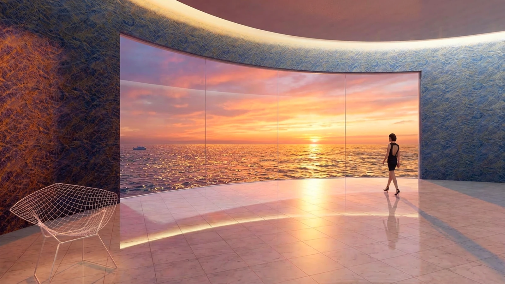
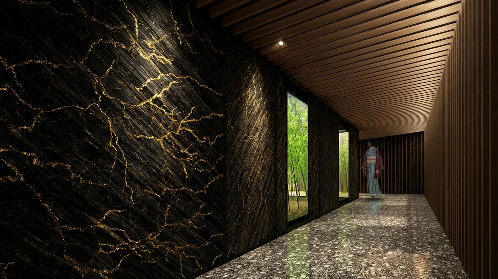
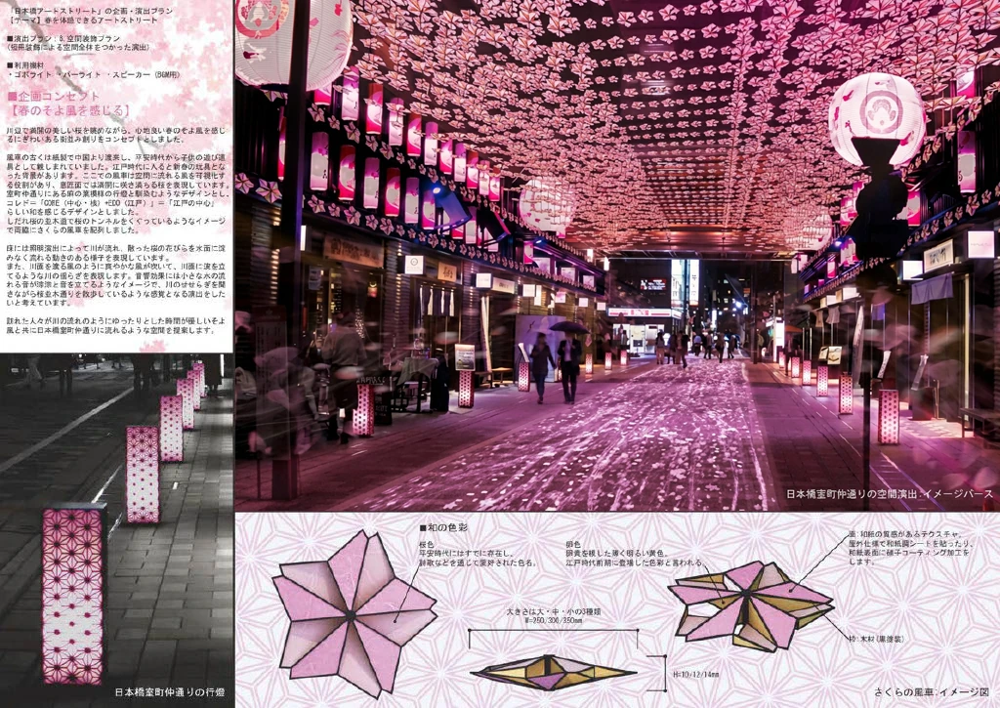
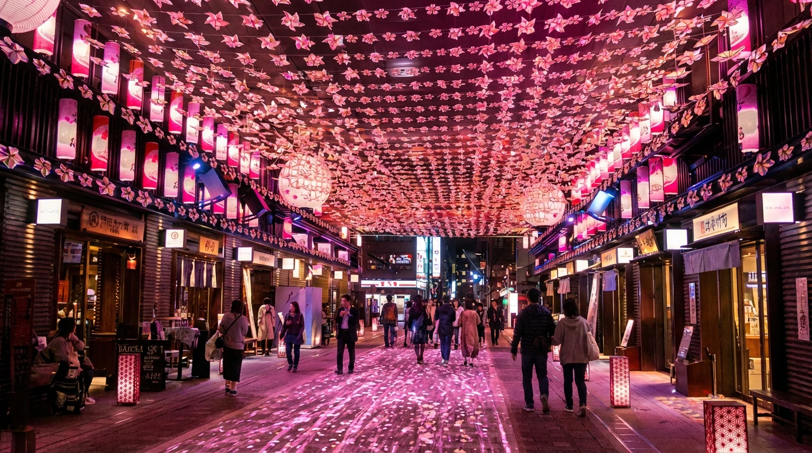
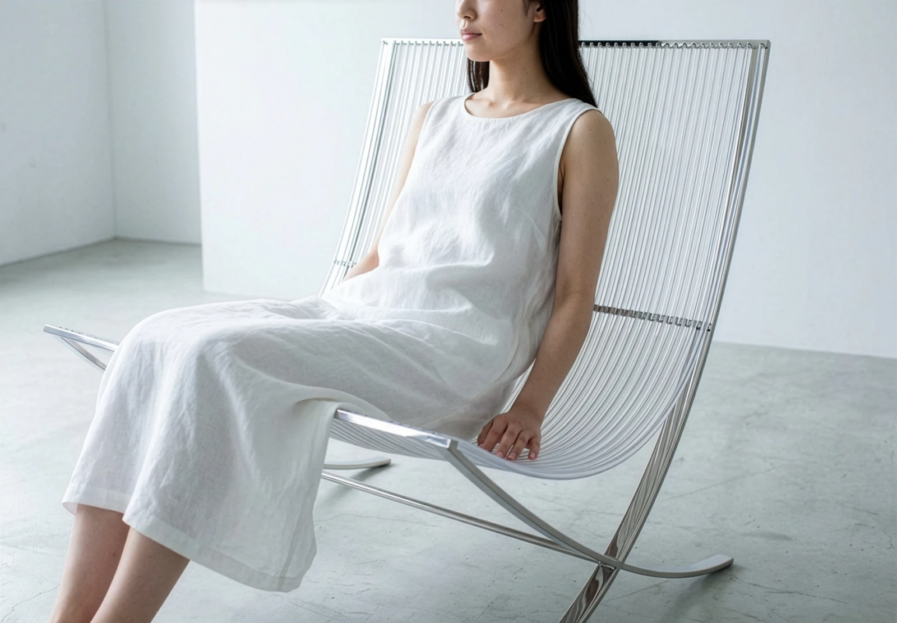
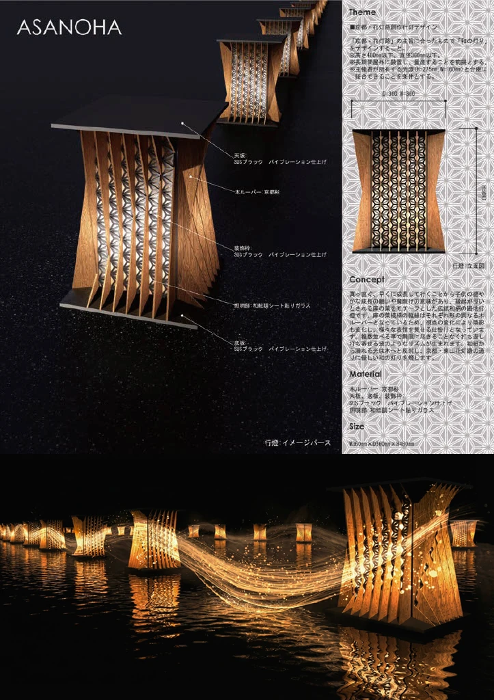
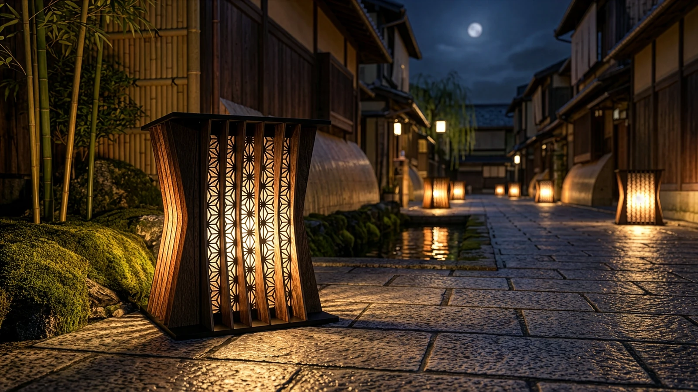

SPACE空間
光・音・映像が交差する没入型の空間演出。訪れる人の動きや視点によって体験が変化する、インタラクティブなインスタレーションを創出する領域。
空間デザイン


天然石ラピスラズリの深い青と金の輝きを壁紙として再現し、空間に透明感と神秘性を与えるデザインです。細かな粒子感と色の重なりをデジタルテクスチャで表現し、光の角度によって表情が変わるよう設計。ホテルや住宅など多様な空間で、静かな高級感と自然素材の美しさを感じられる壁紙を目指しました。


稲妻が走る一瞬の光をモチーフに、黒と金のコントラストで空間を引き締める壁紙デザインです。斜めに流れるストロークと細い金のラインで、雷の力強さと緊張感を表現。ホテルや商業空間のアクセントとして、重厚感とドラマ性を与えることを目指しました。
インスタレーション作品




桜の光と風をテーマに、日本橋室町仲通りを幻想的に彩る空間演出としてデザインしました。頭上には無数の“さくら型の風車”が連なり、風が吹くたびにゆるやかに回転して、歩く人の頭上で桜が舞うような景色を生み出します。足元には花びらが流れるように広がる光の演出を重ね、上と下の動きが呼応する、立体的な桜の世界を構築しました。日本の伝統文様をモチーフにしつつ、現代的な光・風の演出と組み合わせることで、季節の移ろいと日本らしい情緒を感じられる街路空間を目指しています。
家具デザイン


ミース・ファン・デル・ローエのバルセロナチェアを現代的に再解釈した、軽やかでミニマルなフォールディングチェアです。シリコンチューブの柔らかさとステンレスフレームの軽快なラインで、快適な座り心地と透過感のあるデザインを両立。曲線構造が空間に溶け込み、さらに折り畳み可能な構造で、実用性と美しさを兼ね備えた椅子を目指しました。
展示デザイン




日本の伝統文様「麻の葉」を現代的に再構築し、光と影が織りなす立体的なパブリックアートをデザインしました。木と金属のレイヤー構造により文様が浮かび上がり、見る角度によって表情が変化。伝統の美しさを未来的なフォルムで表現し、空間そのものを象徴的に演出するインスタレーションです。
シェアハウス｜インテリア提案

ひとりの時間も、ともに暮らす時間も。
木の温もりを基調に、個室ごとに異なる色彩を取り入れたシェアハウスのインテリア提案。共有のリビング・ダイニングと、それぞれの時間を過ごす個室を組み合わせ、多様な暮らしがひとつの住まいに共存する空間を描きました。
映画館書店｜2050年の書店

本との出会いを、空間で楽しむ。
電子書籍が主流となる2050年を想定した、映画館のような書店の提案。大型スクリーンによる本の紹介と、端末での検索・読書、カフェを組み合わせ、本との出会いや読書の時間を、人と同じ空間で楽しむ新しい書店のあり方を描きました。